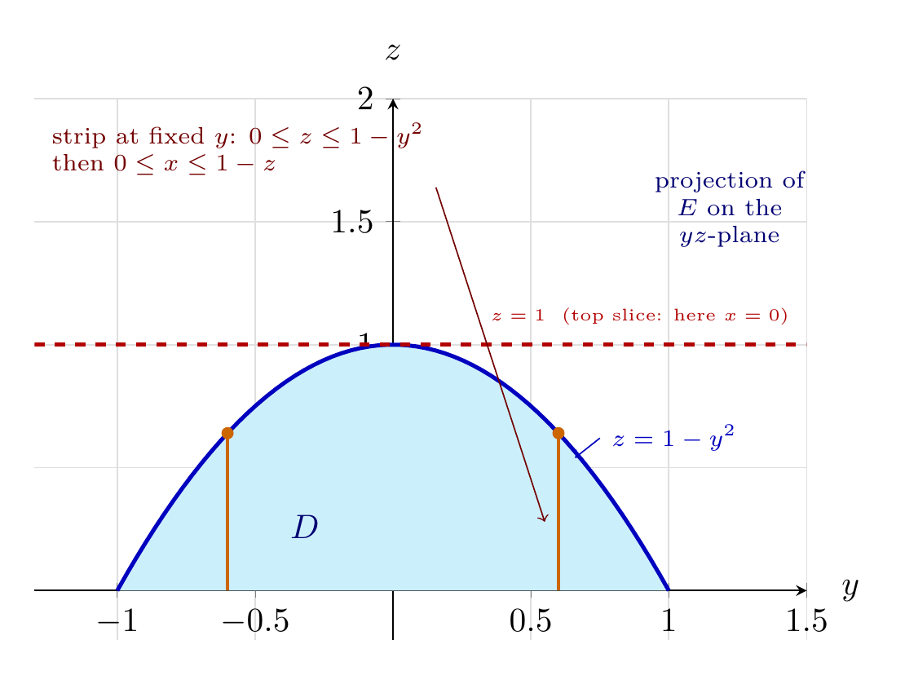

Please solve the problem in the following image.
(Image `20260928_002613_641702_utc_0800_0.png`. Alt text: Image: human_20260928_002613_641702_utc_0800)
20260928_002613_641702_utc_0800_0.png
\documentclass[border=10pt]{standalone}
\usepackage{pgfplots}
\pgfplotsset{compat=1.18}
\begin{document}
\begin{tikzpicture}
\begin{axis}[
width=9.6cm, height=7.2cm,
xlabel={$y$}, ylabel={$z$},
xmin=-1.30, xmax=1.50, ymin=-0.20, ymax=2.00,
axis lines=middle, grid=major, grid style={gray!25},
xlabel style={at={(ticklabel* cs:1.03)}, anchor=west},
ylabel style={at={(ticklabel* cs:1.05)}, anchor=south},
samples=60, domain=-1:1, no marks]
% shaded projection D (region 0 <= z <= 1-y^2)
\addplot+[fill=cyan!20, draw=none] {1-x^2} \closedcycle;
% parabola z = 1 - y^2
\addplot+[very thick, blue!75!black] {1-x^2};
\node[blue!75!black, font=\scriptsize] (plbl) at (axis cs:1.02,0.62) {$z=1-y^2$};
\draw[->, blue!75!black, thin] (plbl.west) -- (axis cs:0.66,0.54);
% top slice z = 1
\addplot+[dashed, red!70!black, very thick, domain=-1.30:1.50] {1};
\node[red!70!black, font=\tiny, anchor=south east] at (axis cs:1.48,1.03)
{$z=1$\ \ (top slice: here $x=0$)};
% vertical strips at fixed y
\draw[orange!80!black, thick] (axis cs:-0.6,0) -- (axis cs:-0.6,0.64);
\fill[orange!80!black] (axis cs:-0.6,0.64) circle (1.8pt);
\draw[orange!80!black, thick] (axis cs:0.6,0) -- (axis cs:0.6,0.64);
\fill[orange!80!black] (axis cs:0.6,0.64) circle (1.8pt);
\node[black!55!red, font=\scriptsize, align=left, anchor=north west] (txt) at (axis cs:-1.28,1.95)
{strip at fixed $y$: $0\le z\le 1-y^2$\\ then $0\le x\le 1-z$};
\draw[->, black!55!red, thin] (txt.south east) -- (axis cs:0.55,0.28);
\node[blue!45!black, font=\bfseries] at (axis cs:-0.32,0.26) {$D$};
\node[blue!45!black, font=\scriptsize, align=center] at (axis cs:1.22,1.55)
{projection of\\ $E$ on the\\ $yz$-plane};
\end{axis}
\end{tikzpicture}
\end{document}

pgfplots_0.png
---
# Mass and Center of Mass of a Solid with Constant Density
**Problem.** $E$ is bounded by the parabolic cylinder $z=1-y^{2}$ and the planes $x+z=1$, $x=0$, $z=0$, with density $\rho(x,y,z)=4$. Find the mass and the center of mass of $E$.
## Step 1 — Describe the solid
The surface $z=1-y^{2}$ is a **parabolic cylinder**: a parabola in the $yz$-plane extruded parallel to the $x$-axis. So the natural shadow of $E$ is its projection $D$ onto the **$yz$-plane** (first plot).
- From $z=1-y^{2}$ together with $z=0$: $\;-1\le y\le 1,\quad 0\le z\le 1-y^{2}$.
- The planes $x=0$ and $x+z=1$ (i.e. $x=1-z$) cap the solid in the $x$-direction. Since $0\le z\le 1$ we have $1-z\ge 0$, so $0\le x\le 1-z$.
$$E=\bigl\{(x,y,z):\ -1\le y\le 1,\ \ 0\le z\le 1-y^{2},\ \ 0\le x\le 1-z\bigr\}.$$
*Geometric checks.* At the crest $z=1$ the $x$-interval collapses to $x=0$: the roof and the slanted plane meet there. At $z=0$ the interval is the full $[0,1]$. The solid is invariant under $y\mapsto -y$.
## Step 2 — The mass
$$m=\iiint_E \rho\,dV=\int_{-1}^{1}\!\int_{0}^{1-y^{2}}\!\int_{0}^{1-z} 4\;dx\,dz\,dy .$$
**Inner ($x$):** $\displaystyle\int_0^{1-z}4\,dx=4(1-z)$.
**Middle ($z$):** with $A=1-y^{2}$,
$$\int_{0}^{A}4(1-z)\,dz=4\left[z-\frac{z^{2}}{2}\right]_{0}^{A}=4A-2A^{2}=2A(2-A)=2\left(1-y^{2}\right)\left(1+y^{2}\right)=2\left(1-y^{4}\right).$$
**Outer ($y$):**
$$m=\int_{-1}^{1}2\left(1-y^{4}\right)dy=2\left[y-\frac{y^{5}}{5}\right]_{-1}^{1}=2\left(2-\frac{2}{5}\right)=\frac{16}{5}.$$
So $m=\dfrac{16}{5}=3.2$. (Equivalently $V=\tfrac45$ and $m=\rho V=4\cdot\tfrac45$.)
## Step 3 — Moment about the $yz$-plane, hence $\bar x$
$$M_{yz}=\iiint_E x\,\rho\,dV=\int_{-1}^{1}\!\int_{0}^{1-y^{2}}\!\int_{0}^{1-z}4x\;dx\,dz\,dy .$$
**Inner ($x$):** $\displaystyle\int_0^{1-z}4x\,dx=2(1-z)^{2}$.
**Middle ($z$):** using the antiderivative $-\tfrac{2}{3}(1-z)^{3}$,
$$\int_{0}^{1-y^{2}}2(1-z)^{2}dz=\left[-\frac{2}{3}(1-z)^{3}\right]_{0}^{1-y^{2}}=-\frac{2}{3}y^{6}+\frac{2}{3}=\frac{2}{3}\left(1-y^{6}\right).$$
**Outer ($y$):**
$$M_{yz}=\frac{2}{3}\int_{-1}^{1}\left(1-y^{6}\right)dy=\frac{2}{3}\left(2-\frac{2}{7}\right)=\frac{2}{3}\cdot\frac{12}{7}=\frac{8}{7}.$$
$$\bar x=\frac{M_{yz}}{m}=\frac{8/7}{16/5}=\frac{8}{7}\cdot\frac{5}{16}=\frac{5}{14}.$$
## Step 4 — Moment about the $xz$-plane, hence $\bar y$ (symmetry shortcut)
$$M_{xz}=\iiint_E y\,\rho\,dV.$$
The region $E$ is unchanged by the reflection $y\mapsto -y$ (every bound involves only $y^{2}$), while the integrand $4y$ is **odd** in $y$. Hence the integral vanishes:
$$M_{xz}=0\qquad\Longrightarrow\qquad \bar y=0.$$
Constant density + mirror symmetry about the plane $y=0$ forces the center of mass to lie **in** that plane — no integration needed.
## Step 5 — Moment about the $xy$-plane, hence $\bar z$
$$M_{xy}=\iiint_E z\,\rho\,dV=\int_{-1}^{1}\!\int_{0}^{1-y^{2}}\!\int_{0}^{1-z}4z\;dx\,dz\,dy .$$
**Inner ($x$):** $\displaystyle\int_0^{1-z}4z\,dx=4z(1-z)$.
**Middle ($z$):** with $A=1-y^{2}$,
$$\int_{0}^{A}\left(4z-4z^{2}\right)dz=2A^{2}-\frac{4}{3}A^{3}=\frac{2}{3}A^{2}\left(3-2A\right)=\frac{2}{3}\left(1-y^{2}\right)^{2}\left(1+2y^{2}\right)=\frac{2}{3}\left(1-3y^{4}+2y^{6}\right).$$
**Outer ($y$):**
$$M_{xy}=\frac{2}{3}\int_{-1}^{1}\left(1-3y^{4}+2y^{6}\right)dy=\frac{2}{3}\left(2-\frac{6}{5}+\frac{4}{7}\right)=\frac{2}{3}\cdot\frac{48}{35}=\frac{32}{35}.$$
$$\bar z=\frac{M_{xy}}{m}=\frac{32/35}{16/5}=\frac{32}{35}\cdot\frac{5}{16}=\frac{2}{7}.$$
## Step 6 — Result and interpretation
$$\boxed{\;m=\frac{16}{5},\qquad (\bar x,\bar y,\bar z)=\left(\frac{5}{14},\,0,\,\frac{2}{7}\right)\;}$$
**Is the point inside $E$?** Yes: $\bar z=\tfrac27\le 1-\bar y^{2}=1$ ✓, and $\bar x+\bar z=\tfrac{5}{14}+\tfrac{4}{14}=\tfrac{9}{14}\le1$ ✓, with $\bar x,\bar z\ge0$ ✓.
**Why these numbers are sensible.**
- $\bar y=0$ exactly, by the mirror symmetry of Step 4.
- $\bar x=\tfrac{5}{14}\approx0.357<\tfrac12$: the slab is thickest in $x$ near $z=0$ (where $0\le x\le1$) and pinches to $x=0$ at the crest, so mass piles toward the plane $x=0$.
- $\bar z=\tfrac{2}{7}\approx0.286<\tfrac12$: the parabolic roof keeps most of the volume low, so the center of mass sits well below mid-height.
- Because $\rho\equiv4$ is constant, the center of mass coincides with the **centroid** — it does not depend on the value of $\rho$; the density only scales the mass, $m=\rho V$.
## Recipe for this kind of problem
1. **Pick the projection** so that every limit is a single formula. Here the cylinder $z=1-y^{2}$ runs parallel to $x$, so project on the $yz$-plane and let $x$ run between the two planes: $0\le x\le1-z$.
2. **Mass:** $m=\iiint_E\rho\,dV$, integrating innermost-first and reducing each stage to a polynomial.
3. **Moments:** $M_{yz}=\iiint_E \rho x\,dV$, $\;M_{xz}=\iiint_E \rho y\,dV$, $\;M_{xy}=\iiint_E \rho z\,dV$.
4. **Use symmetry** to kill odd integrals before computing them.
5. **Divide:** $\bar x=M_{yz}/m,\ \bar y=M_{xz}/m,\ \bar z=M_{xy}/m$, then verify the point lies in $E$.
*Verification performed:* each moment was recomputed with the reversed order $0\le z\le1,\ -\sqrt{1-z}\le y\le\sqrt{1-z},\ 0\le x\le1-z$, and independently by a $4\times10^{6}$-point Monte-Carlo sample, which returned $m\approx3.20$, $\bar x\approx0.3573$, $\bar y\approx-9\times10^{-5}$, $\bar z\approx0.2855$ — consistent with $\tfrac{16}{5},\ \tfrac{5}{14},\ 0,\ \tfrac{2}{7}$.
---